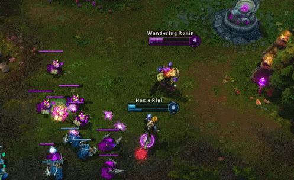

Problems with the NALCSPA: NLRA Union Rights, Collective Bargaining, and Major League Baseball.
(June 2018 Meeting of the North American League Championship Series Players Association. Image via NALCSPA / Riot Games).
What has the NALCSPA been up to?
Since the NALCSPA's first official post on twitter (from June 6th, 2018), there has been little development. Player representatives were elected almost a year ago, meaning that the association should be extremely ready to begin discussing policy changes with Riot. In the past year, there has been a single, miniscule rule change regarding roster changes. This is not meant to diminish the work done by the NALCSPA, as I am sure there was a significant amount of effort involved in securing this change. However, for a league with a multitude of issues, the lack of significant change is concerning. It brings into question: Is Riot preventing the association from pushing changes? While I think the correct answer does lean towards yes, the situation appears to be much more complex than that and requires a full examination.
(Current NALCSPA President Darshan "Darshan" Upadhyaya who was largely the one behind the roster rule change. Image via NALCSPA / Riot Games).
What's risky about the NALCSPA?
The main problem since the inception of the NALCSPA is that it is completely funded by Riot Games themselves. That means that it cannot be recognized as an official union under the National Labor Relations Act (NLRA). The NLRA specifically prohibits the recognition of unions that involve employers that "contribute financial or other support" to them. What this means for players is that it prevents them from collectively bargaining and establishing any collective bargaining agreements (CBAs) between the NALCSPA and Riot Games to improve their working conditions or make rule changes. Because players have yet to be contractually recognized as employees by Riot (as far as the public is aware), their implicit status as independent contractors would create a barrier to NLRA-recognition. However, legal scholar Hunter Amadeus Bayliss has already determined in a 2016 analysis that under California labor codes (CA is the state where every LCS contract is signed therefore all LCS contracts are subject to the state's labor codes) and using historical precedent set by legal tests created for employee determination, players would be considered employees of Riot Games if it were to be challenged in court or by the National Labor Relations Board (NLRB).
Riot is also clearly against the idea of the PA being considered a "union" or players being considered employees of Riot Games. Not only is there evidence that Riot Games is using Seyfarth Shaw—a firm known for its union-busting history—for legal representation in current cases regarding gender discrimination in their developer wing, but LCS/Riot Games executives have specifically opposed the idea of the NALCSPA being a union-like organization. LCS Commissioner Christopher Greeley has been quoted saying that what Riot is funding is not a union but rather a professional association, “an organization that can serve many different purposes (including negotiating on behalf of ‘the profession’),” and also says that the players are employed by LCS teams rather than by Riot itself. This means that Riot is unlikely to deal with player concerns in the same way as if they were creating a collective bargaining agreement (CBA) through union negotiations. Greeley is also incorrect when he states that players aren't employees of Riot Games. He is likely citing an official LCS rule (2.6 in the 2019 LCS ruleset) that prohibits "Members of the Full Team Roster (Section 3.7)" or any member of an LCS team roster from being "employees of Riot Games Inc.(“RGI”), North America League of Legends Championship Series LLC (“NALCS LLC”), the League of Legends eSports Federation LLC or any of their respective affiliates at the start of or at any point during the LCS Competitive Season." Unfortunately for Greeley and Riot, LCS rules have little jurisdiction when it comes to employee determination. As stated above, the contracts the LCS (as a reminder, the LCS is a subsidiary of Riot Games) has with LCS players and teams are in California, which makes them subject to California-specific labor codes. California labor code does not determine employee status based on what is written in legal contracts, but rather through a complex set of legal tests that relate to the different levels of control a certain party has over another party in contractual agreements (which—through extensive analysis and legal test application—Bayliss found to determine LCS players to be employees of both LCS teams and Riot Games). This means that players are legally employees of Riot Games and should be treated as such.
(Visual Representation of Riot v. CA Labor Codes. Image via Reddit / Riot Games)
Okay, but isn't the NALCSPA still beneficial?
Many would argue that a non-NLRA-recognized players association is better than not having one at all. There is some legitimate weight to this perspective, as even LCS players themselves have been quoted saying that players would not have created one themselves. Currently retired, long-time LCS player Daerek "LemonNation" Hart commented in a 2017 interview on why he thinks LCS players would not have established an association on their own:
- "I mean we’re constantly competing with each other. The pros aren’t talking to each other. There’s the friendships and teams and stuff like that, but we’re never brought all together. The only time we were brought all together was by Riot. We were brought together recently for the players summit where we had all the players association (talk) and stuff like that. There’s just no way that the players by themselves would do it. I think most of the players are too lazy and just too focused on other things. They’re too focused on competing and winning. We’re all technically on the same side, but we are all competing against each other as well."
LemonNation's response is important because of the background behind the reasons he provides supporting player disinterest in creating their own association. He supports his claim by citing that players are "too focused on other things" and generally "too focused on competing." These comments are similar to analysis from previous sections in this project on the effects of Riot's patching and LCS work culture. In order to keep their position on the team and remain competitive against their peers, players are already overworking themselves. They do not have the energy nor the incentive to sacrifice the financial resources and time needed to establish a union, especially when you consider the brevity of LCS player careers. This becomes extremely important when you consider the ethics behind Riot establishing a players union.
As attorney Uriah Tagle has discussed in his recent article on North American eSports unions (article is behind journal paywall, if interested in the full article it can purchased through Volume 19:2 here), "the existence of the Riot PA might actually discourage players from unionizing." Players who were potentially considering to pursue union efforts now face the barrier of an already existing player's association. Although they may not agree with the organization's approach, they likely would not have the resources or bargaining power to convince other LCS players to abandon the new association. Tagle addresses this stating that LCS players choosing to "forgo all Riot funding" is "difficult to imagine," as player schedules and competitive culture make collectively challenging the association near impossible. eSports lawyer Ryan Morrison (who currently represents one of the NALCSPA's vice presidents, Alfonso "Mithy" Rodríguez) has directly commented on the matter in an 2017 interview for SportsPro Media:
- “We're watching a players' association being formed in League of Legends and it's basically being done without the players. They are not paying attention to it, understanding what it does, or asking the right questions. On top of that, Riot themselves are recommending the attorneys to use, and the one that was ultimately chosen. That is always a major red flag, when your employer is choosing your attorney."
Morrison argues that Riot's 'hand-holding' approach is concerning for both player mentality and the players association. The lack of player engagement implies that players may not currently see the value in either a Riot-owned PA or a player-owned PA. Additionally, Riot's heavy-handed involvement in the development of the PA brings the question of whether the PA will be able to challenge Riot on certain issues. The NALCSPA may be possible with help from Riot-recommended NALCSPA head Hal Biagas, but Riot's interests may end up taking precedent over player requests.
Hal Biagas, Riot, and Major League Baseball History
The current head of the NALCSPA is Hal Biagas, a former 12-year member of the Assistant General Counsel for the National Basketball Association Players Association (NBAPA). He was one of three candidates out of those vetted by Riot and was ultimately selected through player vote. Although his relationship to Riot and LCS teams is an immediate red flag, he appears to be genuinely focused on assisting players. As a result of his interactions with Biagas, Ryan Morrison has actually flipped his opinion on the NALCSPA's potential in a 2018 interview for The Shotcaller:
- “I was incredibly cynical about it at first, because of the idea that Riot was funding it. What was their motive? But, as I’ve gotten to know Hal Biagas, the Head of the Player’s Association, I’ve been nothing but impressed. I think Hal genuinely understands the space, cares about it and cares about these players. He’s the first person in esports in recent history to call me on my shit, basically saying, 'fix your contracts and make them better here, here and here.' I appreciated that, I’m glad that someone is looking out for the players besides us, the agents. We should be in check. I have high hopes for what Hal is doing."
In an interview with content creator and interviewer Travis Gafford (embedded below), Hal Biagas answered a barrage of questions regarding his opinions on Riot, their intentions, and his own personal goals for the PA. His responses included several concerns regarding the current "team-friendliness" of player contracts in terms of marketing and sponsorship rights, stream and content creation obligations, and intellectual property rights ownership. He also indicated that he was in favor of salary transparency (at least to the extent of providing a private database to current and future LCS players). In terms of Riot, he was also mildly critical, discussing future planned PA efforts to gain more players compensation for non-LCS events (such as All-Star and Rift Rivals events). The goals he has laid for the PA itself also seem to be in the right place, with an emphasis on helping players “while they’re playing professionally and after their careers are over” through "stress management seminars" and presentations based on "finance and different aspects of investing." In responding to questions about the potential for walkouts and strikes, he also gave a fairly balanced answer conceding that "there are no eSports strike prohibitions, so it’s a real possibility."
(Interview of Hal Biagas conducted by Travis Gafford. Via Travis Gafford / YouTube).
Although words do mean something, actions are often more reflective of true intentions. As previously mentioned, there has been one small rule change since this interview (topic related to the rule was not even touched upon in the interview). There is also no available evidence that indicates that there are current discussions between Biagas and Riot on any of the changes discussed in the interview. This is important because it resembles a moment of traditional sports history plagued with player rights abuse.
As eSports freelancer Jack Moore accentuated in an article for Kotaku in 2017, the NALCSPA is extremely similar to the Major League Baseball Players Association (MLBPA) in its early years. Unfortunately, this is not intended as a complement. In 1959, Moore states, MLB "ownership had convinced the players to bring on one of their men, Milwaukee judge Robert Cannon, as an advisor. Cannon was entirely in the owners’ pockets and routinely bragged about baseball having the 'finest relationship between players and management in the history of the sport.'" Moore highlights that, similar to the Riot Games, "Major League Baseball planned to fund the Player’s Association with $150,000 drawn from the All-Star Game’s revenue." This version of the MLBPA resulted in zero changes to player working conditions that were described as "atrocious." Moore states that Cannon's only real response to players was that they simply "were lucky to get to play the greatest game known to man."
Obviously, Hal Biagas is not Robert Cannon and Riot Games is not comprised of Major League Baseball executives from the late 50s. But the potential for Riot to directly ignore player concerns due to the lack of union recognition and no established collective bargaining agreements is serious. Riot's own official copy on the purpose of the NALCSPA states that it is intended to provide "centralized representation for players in tri-party negotiations (Riot-Owners-Players)" and to "also provide access to vetted resources (e.g. legal/financial advice) to help players planning out their careers," implying that they are unlikely to deal with negotiations between solely Riot and LCS players without the presence of franchised owners who have limited shared interests with LCS players. Until Hal Biagas clearly creates more beneficial conditions and contracts for players through the NALCSPA, it is more than reasonable to be extremely skeptical.
(As a brief sidenote, Riot Games did actually have an on-going, 7-year, exclusive $300m broadcasting partnership signed with BAMTech back in 2016 when it was majority owned by Major League Baseball Advanced Media, an LLC spin-off of the MLB [until the Walt Disney Company became a 75% stakeholder in BAMTech, resulting in the death of the original broadcasting deal]).
Fair Enough, so why do players need a union?
The status quo of unsatisfactory working conditions (12-14 hour work days, 6-7 day work weeks, high-injury rates), assymmetrical market information for players (no public salaries, unclear employment definition, lack of universal, standardized player contracts [UPCs]), and volatile developer-habits (patching harming job security, financial opportunities, and work conditions for players) discussed in previous sections are not acceptable. The only way to properly address—as in, legally enforce—the remediation of these issues is to draft and sign a collective bargaining agreement or CBA between an NLRA-recognized LCS player union and LCS LLC or Riot Games. Players would also be able to argue for improved revenue shares and benefits for any required tournaments or LCS appearances outside of contractual obligations, which will be detailed in the following policy recommendations section. Players should recognize the benefits associated with unions and create a detailed plan to buy-out and run the NALCSPA independently. Otherwise, Riot will continue pursuing decisions that prioritize their own interests over the "best interests of the LCS."